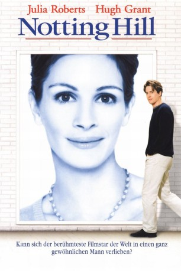

#870 Notting Hill
Auszeichnungen: 1 BAFTA-Awards gewonnen
 gesehen am 06.05.2015
gesehen am 06.05.2015
 
 IMDB-Wertung: 7.1 / 10
IMDB-Wertung: 7.1 / 10  Metascore: 66
Metascore: 66 
Der sympathische Buchhändler William glaubt seinen Augen nicht zu trauen, als eines Tages der Hollywood-Star Anna Scott ausgerechnet seinem Laden im Londoner Stadtteil Notting Hill einen Besuch abstattet. Angezogen von der Normalität von Williams Leben entspannt sich allmählich zwischen der Kinoprinzessin und dem schüchternen Single eine zarte Liebe. Doch nicht nur die scheinbar unvereinbaren Welten, auch das plötzliche Auftauchen von Annas Freund stellen die ohnehin kaum für möglich gehaltene Beziehung auf eine harte Probe.
Jahr: 1999
Dauer: 124 Minuten
FSK: 6
Land: England Studio: PolyGramTonspuren: DTS - ,
Untertitel: Deutsch,
Auflösung: 1080p (1920x816) Größe: 9994 MB
Genre: Komödie, Drama, Liebe
Regisseur: Roger Michell
Drehbuch: Richard Curtis
Soundtrack: Trevor Jones
Darsteller:
 Julia Roberts als Anna Scott
Julia Roberts als Anna Scott Hugh Grant als William Thacker
Hugh Grant als William Thacker Richard McCabe als Tony
Richard McCabe als Tony Rhys Ifans als Spike
Rhys Ifans als Spike- James Dreyfus als Martin
 Dylan Moran als Rufus the Thief
Dylan Moran als Rufus the Thief Henry Goodman als Ritz Concierge
Henry Goodman als Ritz Concierge Julian Rhind-Tutt als 'Time Out' Journalist
Julian Rhind-Tutt als 'Time Out' Journalist- Lorelei King als Anna's Publicist
 John Shrapnel als PR Chief
John Shrapnel als PR Chief Clarke Peters als 'Helix' Lead Actor
Clarke Peters als 'Helix' Lead Actor Mischa Barton als 12-Year-Old Actress
Mischa Barton als 12-Year-Old Actress Tim McInnerny als Max
Tim McInnerny als Max Gina McKee als Bella
Gina McKee als Bella- Emma Chambers als Honey
 Hugh Bonneville als Bernie
Hugh Bonneville als Bernie Sanjeev Bhaskar als Loud Man in Restaurant
Sanjeev Bhaskar als Loud Man in Restaurant Paul Chahidi als Loud Man in Restaurant
Paul Chahidi als Loud Man in Restaurant Emily Mortimer als Perfect Girl
Emily Mortimer als Perfect Girl- Tony Armatrading als Security Man
 Samuel West als Anna's Co-Star
Samuel West als Anna's Co-Star- Ann Beach als William's Mother
 Alec Baldwin als Jeff King , uncredited
Alec Baldwin als Jeff King , uncredited- Andrew Blackall als Journalist , uncredited
 Simon Callow als Himself in Film within Film , uncredited
Simon Callow als Himself in Film within Film , uncredited- Joe Cornish als Fan Receiving Anna's Autograph , uncredited
 Sean Cronin als Walk On , uncredited
Sean Cronin als Walk On , uncredited Omid Djalili als Cashier at Coffee Shop , uncredited
Omid Djalili als Cashier at Coffee Shop , uncredited- Michael Higgs als Man at Market , uncredited
- Anthony Maddalena als Entertainment Journalist , uncredited
 João Costa Menezes als Journalist , uncredited
João Costa Menezes als Journalist , uncredited Matthew Modine als Movie-Within-Movie Actor , uncredited
Matthew Modine als Movie-Within-Movie Actor , uncredited Taylor Murphy als Journalist , uncredited
Taylor Murphy als Journalist , uncredited- Vivienne Soan als Bystander , uncredited
- Roger Frost als Annoying Customer
- Arturo Venegas als Foreign Actor
- Yolanda Vazquez als Interpreter
- Dorian Lough als Loud Man in Restaurant
- Matthew Whittle als Loud Man in Restaurant
- Melissa Wilson als Tessa
- Emma Bernard als Keziah
- September Buckley als Third Assistant Director
- Phillip Manikum als Harry the Sound Man
- Dennis Matsuki als Japanese Businessman
- Patrick Barlow als Savoy Concierge
- Andy de la Tour als Journalist
- Maureen Hibbert als Journalist
- Rupert Procter als Journalist
- David Sternberg als Journalist
- Ian Boo Khoo als Journalist , uncredited
Datei: X:\1999\Notting Hill (1999, FSK6, 1920x816).mkv seit 10.04.2015
Festplatte: HD 1996-2002
 Es gibt insgesamt 81 Filme in der Gruppe '1999'
Es gibt insgesamt 81 Filme in der Gruppe '1999'